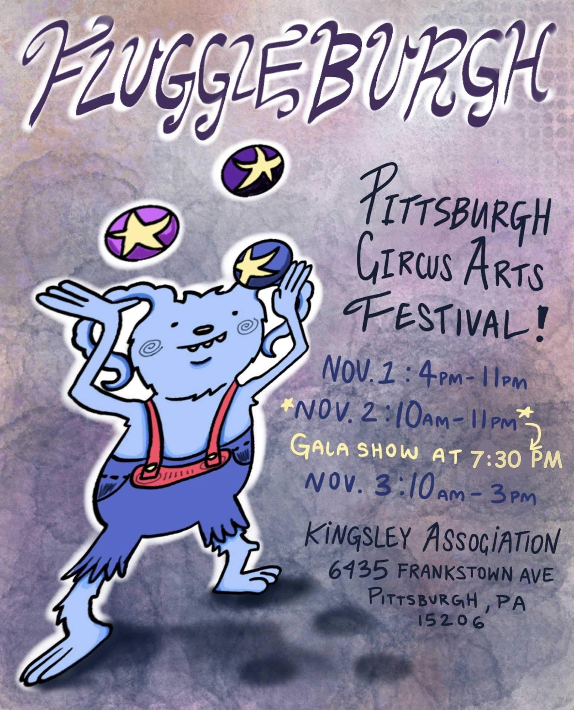
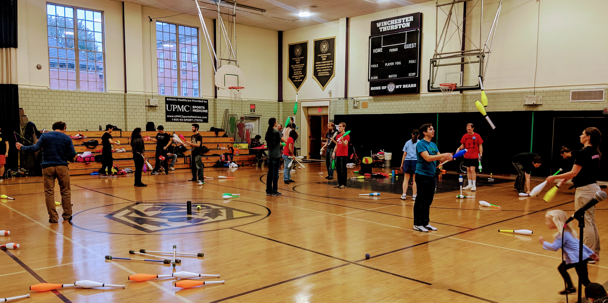
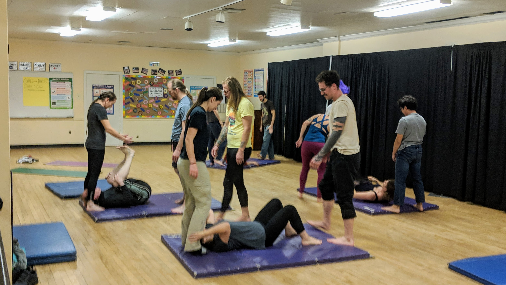
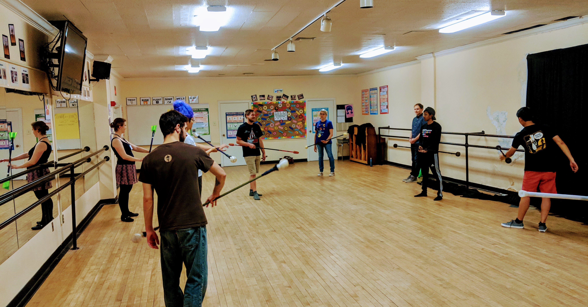
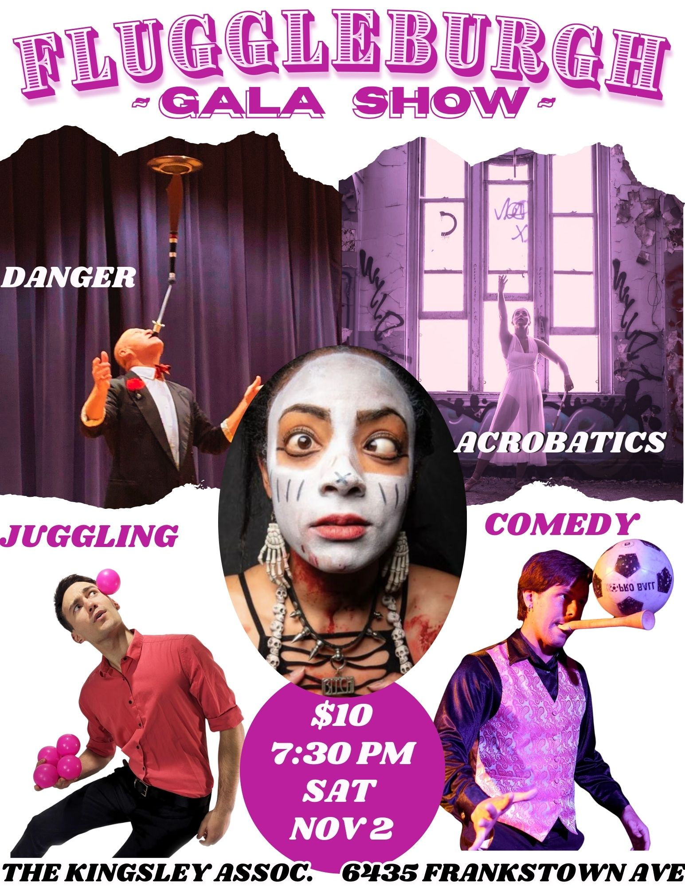
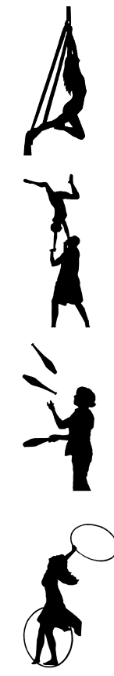

juggling * acro * flow arts * circus
Nov 1-3, Pittsburgh, PA

FluggleBurgh is a 3-day festival for all circus and skill arts hosted by Pittsburghs juggling, acro, clowning, and flow arts community (FluggleBurgh = flow + juggle + pittsburgh). It will be held at the The Kingsley Association in the east-end of Pittsbugh. FluggleBurgh will provide a communal practice space in a large gym with tall ceilings, classrooms with scheduled workshops all weekend, outdoor practice and fire space (weather permitting), object manipulation games/competition, and shows. All activities will be in the same space. All walks of object manipulation, circus arts, and movement arts are welcome.
In spirit, it is a successor of the Not Quite Pittsburgh Juggling Festival (2008-2015). Now, the festival is actually within the Pittsburgh city limits.
Our big goal of this festival is to bring the various communities around circus arts and other skills from Pittsburgh and beyond together, share workshops, and showcase the various skills in a show. We expect plenty of juggling, acrobatics, and flow workshops, as well as some clowning, balloons, and maybe even magic and unicycling.



Gym times (open practice, workshops)
To cover the costs of the festival, we ask for $10 per day or $20 for all three days for access to the gym and the workshops. Youth under 16 and locals within walking distance from the Kingsley Association can attend for free. Tickets can be bought on site or online.
Fire Jam (Friday Nov 1, after dark, free)
The fire jam is informal and will be outside in the parking lot, weather permitting, roughly 7 to 9pm. It will be canceled or moved in case of heavy rain.
FluggleBurgh Gala Show (Saturday Nov 2, 7:30-9pm, $10, Kingsley Association)
FluggleBurgh Gala Show: The Gala show on Saturday will be at the Kingsley Association as well. It will feature various circus acts, including juggling, flow, and acro. As usual O’Ryan The O'Mazing will guide through the show.
Show tickets can be bought for $10 in the gym during the festival, at the door, or online. Doors open about 20-30 min before the show.
Underground Renegade Show (Saturday 11:30pm, free)
We will likely have a small renegade show in a secret location late on Saturday. We will share the location in the gym on Saturday after the show.
Workshop Schedule
The workshop schedule is here (minor adjustments may happen on short notice): https://docs.google.com/spreadsheets/d/1N-YvaerTNzKkdIFDeTtNPbHvfz_v5VzUQssqL1YxB_w/edit?gid=0#gid=0
We will have beginner workshops (no prior experience required, open to the general public) throughout the weekend with most of them around Saturday 1-4pm.

With the exception of the Renegade show, all activities (gym, workshops, shows) will be at The Kingsley Association 6435 Frankstown Ave, Pittsburgh, PA 15206
Parking is available in front of and behind the building as well as on nearby streets. The Kingsley Association is in the East End of Pittsburgh and close to numerous bus stops (including 75, 77, 82, 86 and with a short walk 28X, P1, 71B-D, 88, 89). There are three hotels and several restaurants within walking distance.
We will sell t-shirts on site. You can also custom order one with our first design online.
